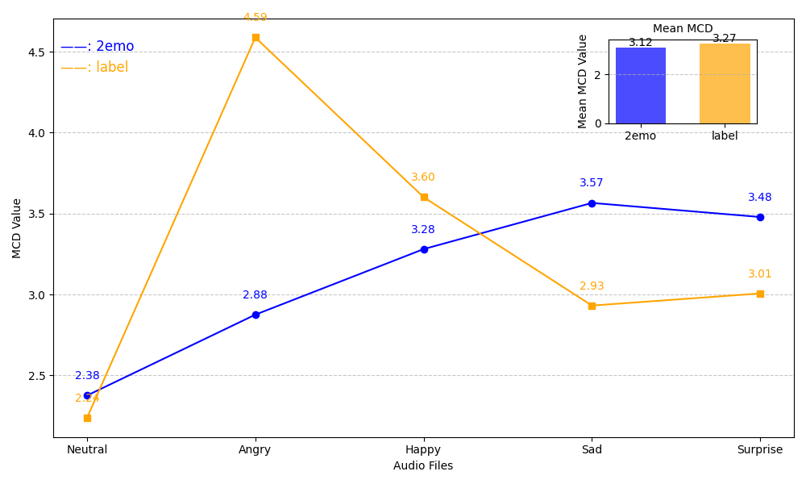
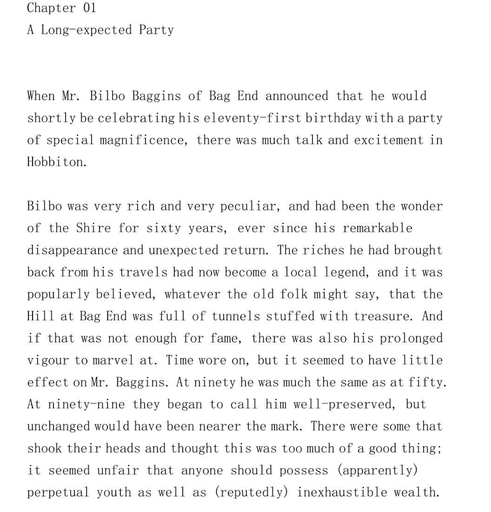
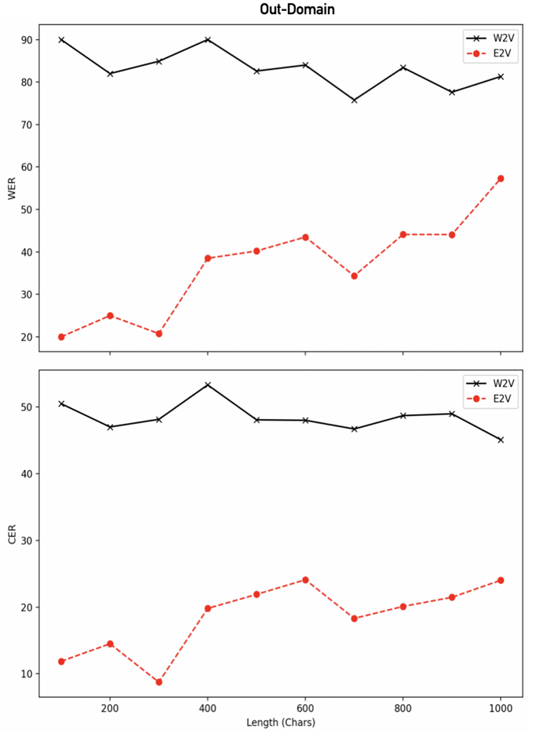

We used two different label scaling factors to control latent codes (0.5x and 1.0x).
| GT | Emo Label | Synthesized Audio(0.5x) | Synthesized Audio(1.0x) |
|---|---|---|---|
|
EN: “But one requires the explorer to furnish proofs.” [EN: Audio] |
Neutral |
|
|
| Angry |
|
|
|
| Happy |
|
|
|
|
CN: “我还不会说其他外语，只会普通话。” [CN: Audio] |
Sad |
|
|
| Surprise |
|
|
GT : Ground truth.
MixedEmotion :Proposed in this paper.
EmoDiff : Proposed in this paper.
| Emotions | Text | GT | MixedEmotion | EmoDiff | Ours(EMO-1) | Ours(EMO-2) | Ours(EMO-2-Label) |
|---|---|---|---|---|---|---|---|
| Surprise-1 | Suppose I take grandmother a fresh vegetable. | ||||||
| Surprise-2 | Tom now let our arrows fly! | ||||||
| Surprise-3 | Her shoes were like fishes. | ||||||
| Happy-1 | They found a cow grazing in a fields. | ||||||
| Happy-2 | Her shoes were like fishes. | ||||||
| Sad-1 | And what are doves. And what are doves. | ||||||
| Angry-1 | Her shoes were like fishes. | ||||||
| Angry-2 | They went up to the dark mass job had pointed out. |
A TTS comparison between VITS2 and our method.
| Datasets | VITS2 | Ours |
|---|---|---|
| LJSpeech | ||
| VCTK |
We conducted a series of ablation experiments on emotion embedding and label control. The TTS text is in Chinese: '最近很冷，风又大。'

| Neutral | Angry | Happy | Sad | Surprise | |
|---|---|---|---|---|---|
| GT | |||||
| EMO-2 | |||||
| EMO-2-Label |
We convert 5 emotions from ESD-0001 to ESD-0002 and generate corresponding speech using the emotions of ESD-0001. The TTS text is in Chinese: '你深深地印在我的脑海里.'
Emotional Speech (ESD-0001): The real emotion recordings from ESD speaker ID
0001
| Generated text：你深深地印在我的脑海里。 | ||||
| Text | Emotion | Emotional Speech (ESD-0001) | W2V | E2V |
|---|---|---|---|---|
| 打远一看，它们的确很是美丽。 | Sad | |||
| 姐忙得很，没空和你说这个。 | Angry | |||
| 没听清，请问什么时间提醒你。 | Surprise | |||
| 我们乘船漂游了三峡，真是刺激。 | Happy | |||
| 打远一看，它们的确很是美丽。 | Neutral | |||
In the ESD training dataset, the maximum input character length does not exceed 150, so we extract utterances of varying lengths from the first chapter of 《The Lord of the Rings》to synthesize speech. By continuously increasing the length of the text, we aim to verify the model's robustness in generating long texts.
We use fine-tuned wav2vec2 (W2V) and emotion2vec (E2V) models to extract out-of-domain emotional features as embeddings features, enabling the model to generate speech with different emotions.


200 chars = " Bilbo was very rich and very peculiar, and had been the wonder of the Shire for sixty years, ever since his remarkable disappearance and unexpected return, The riches he had brought back from his travel"
400 chars = " Bilbo was very rich and very peculiar, and had been the wonder of the Shire for sixty years, ever since his remarkable disappearance and unexpected return, The riches he had brought back from his travels had now become a local legend, and it was popularly believed, whatever the old folk might say, that the Hill at Bag End was full of tunnels stuffed with treasure. And if that was not enough for fame"
600 chars = " Bilbo was very rich and very peculiar, and had been the wonder of the Shire for sixty years, ever since his remarkable disappearance and unexpected return, The riches he had brought back from his travels had now become a local legend, and it was popularly believed, whatever the old folk might say, that the Hill at Bag End was full of tunnels stuffed with treasure. And if that was not enough for fame, there was also his prolonged vigour to marvel at. Time were on, but it seemed to have little effect on Mr. Baggins. At ninety he was much the same as at fifty. At ninety-nine they began to call him"
800 chars = " Bilbo was very rich and very peculiar, and had been the wonder of the Shire for sixty years, ever since his remarkable disappearance and unexpected return, The riches he had brought back from his travels had now become a local legend, and it was popularly believed, whatever the old folk might say, that the Hill at Bag End was full of tunnels stuffed with treasure. And if that was not enough for fame, there was also his prolonged vigour to marvel at. Time were on, but it seemed to have little effect on Mr. Baggins. At ninety he was much the same as at fifty. At ninety-nine they began to call him well-preserved, but unchanged would have been nearer the mark. There were some that shook their heads and thought this was too much of a good thing; it seemed unfair that anyone should possess paper"
| Length(chars) | W2V | E2V |
|---|---|---|
| 200 | ||
| 400 | ||
| 600 | ||
| 800 |